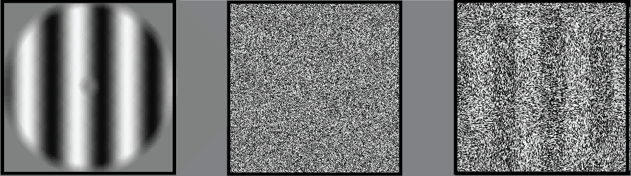

<!DOCTYPE html>
<html>
    <head>
        <title>My experiment</title>
        <script src="jspsych/dist/jspsych.js"></script>
        <script src="jspsych/dist/plugin-html-keyboard-response.js"></script>
        <script src="jspsych/dist/plugin-image-keyboard-response.js"></script>
        <script src="jspsych/dist/plugin-html-button-response.js"></script>
        <script src="jspsych/dist/plugin-call-function.js"></script>
        <script src="jspsych/dist/plugin-animation.js"></script>
        <script src="jspsych/dist/plugin-preload.js"></script>
        <script src="jspsych/dist/plugin-external-html.js"></script>
        <script src="jspsych/dist/plugin-survey-html-form.js"></script>
        <script src="jspsych/dist/plugin-survey-likert.js"></script>


        <link href="jspsych/dist/jspsych.css" rel="stylesheet" type="text/css" />
    </head>
    <body></body>

    
    <script>
  
        /* VARIABLES */
  
        const num_steps = 20;
        const stim_dur  = 2000; /* milliseconds */
        const fix_dur = 200;

        const num_ima_trials = 1; /*10th is the critical one */
        const num_ima_reps = 1; /* how often to repeat the 2 orientations */

        const CONDITION = 1 /*rotation - high cognitive control condition*/


        /* GLOBAL VARIABLES */
        window.vis_level = 38;
        window.stim_id  = 0; /* left */
        window.trl_num = 0;
        window.block_num = 0;

        /* ESSENTIALS */

        /* FIXATION */
        var fixation = {
          type: jsPsychHtmlKeyboardResponse,
          stimulus: '<div style="font-size:60px;">+</div>',
          choices: "NO_KEYS",
          trial_duration: fix_dur,
          data: {task: 'fixation'}
        };

        /* UPDATE TRIAL NUMBER */
        var update_trial_number = {
            type: jsPsychCallFunction,
            func: function() { 
                window.trl_num++;
            }
        };
        
        /* RESPONSE SCALES */
        var vividness_scale = [
            "1 (not at all vivid)",
            "2",
            "3",
            "4",
            "5 (as vivid as real seeing)"
            ];
        
        var confidence_scale = [
            "1 (not at all confident)",
            "2",
            "3",
            "4",
            "5 (very confident)"
            ];


        /* TIMELINE */
        var timeline = [];


        /* PRE-LOAD MEDIA */
        var pre_load = {
            type: jsPsychPreload,
            auto_load: true, /* load all media based on timeline passed to jsPsych.run */
            message: "Please wait while loading the experiment.",
            show_progress_bar: true,
        };
        timeline.push(pre_load)


        /* WELCOME MESSAGE */
        var welcome = {
            type: jsPsychHtmlKeyboardResponse,
            stimulus: "Welcome to the experiment. Press any key to begin."
        };
        timeline.push(welcome)
        
        
        /*

        INFORMATION SHEET

        var information_sheet = {
            type: jsPsychExternalHtml,
            url: "InformationSheet.html",
            cont_btn: "Start",
            execute_script: true
        };

        timeline.push(information_sheet);


        CONSENT

        var check_consent_function = function(elem) {
            if (document.getElementById('consent_checkbox').checked) {
                return true
            }
            else {
                alert("If you wish to participate, must check the box next to the statement 'I agree to participate in this study'");
                return false;
            }
            return false
        };

        var consent_form = {
            type: jsPsychExternalHtml,
            url: "ConsentForm.html",
            cont_btn: "Start",
            check_fn: check_consent_function
        };

        timeline.push(consent_form)

        */


        /* INSTRUCTIONS */
        var instructions = {
            type: jsPsychHtmlKeyboardResponse,
            stimulus: `
                <p> During the next part of this experiment you will imagine <strong> gratings </strong> while looking at <strong> noise </strong> (see below). </p>
                <p> <strong> Gratings </strong> are images of alternating black and white lines (left). </p>
                <p> <strong> Noise </strong> is a collection of random black and white pixels (middle). </p>
                <p> Please imagine the grating as vividly as possible, as if it was actually presented on the screen (right). </p>
                <p> After every trial you will be asked to report how vivid your imagery was. </p>
                </img>
                <p>Press [space] to continue </p>
            `,
            choices: [' '],
        };
        timeline.push(instructions);

        
        /* IMAGERY INSTRUCTIONS */
        var instructions_imagery = {
            type: jsPsychHtmlKeyboardResponse,
            stimulus: function() {
                if (window.stim_id == 0) {
                    var stim_instr = "a left tilted grating";
                    var stim_pic = 'img/stim_1_vis_50.png';
                } else if (window.stim_id == 1) {
                    var stim_instr = "a right tilted grating";
                    var stim_pic = 'img/stim_2_vis_50.png';
                }
                return `
                    <p> During the next few trials, please imagine ` + stim_instr + `</p> 
                    <p> Imagine the grating as vividly as possible, as if it was actually presented on the screen (see below). </p>
                    <p> Please keep your eyes open and look at the noise while imagining. </p>
                    <p> After each trial, you will be asked to rate the vividness of your imagery. </p> 
                    <p> On a scale from 1 (not at all vivid) to 5 (perfectly clear and as vivid as real seeing). </p>
                    </img>
                    <p>Press [space] to continue </p>` 
            },
            choices: [' '],
            post_trial_gap: 500, 
        }
        timeline.push(instructions_imagery);


        /* IMAGERY PROCEDURE */
        function makeStimSequence(startValue, stopValue,cardinality,stim) {
            var arr = [];
            if (stim > 0 ){
                var step = (stopValue - startValue) / (cardinality - 1);
                for (var i = 0; i < cardinality; i++) {
                    var vis = Math.round(startValue + (step * i));
                    arr.push("img/stim_" + stim.toString() + "_vis_" + vis.toString() + ".png");
                }
            } else if (stim == 0){
                ranNoiseOrder = jsPsych.randomization.repeat([1,2,3,4,5,6,7,8,9,10,11,12,13,14,15,16,17,18,19,20],1);
                for (var i = 0; i < cardinality; i++) {
                var random_number = ranNoiseOrder[i];
                arr.push("img/noise_" + random_number.toString() + ".png");
                }
            }
            return arr;
        };

        var show_dynamic_noise = {
            type: jsPsychAnimation,
            stimuli: function() {
            arr = makeStimSequence(1,window.vis_level,num_steps,0);
            jsPsych.pluginAPI.preloadImages(arr)
            return arr
            },
            choices: ["NO_KEYS"],
            frame_isi: 0,
            frame_time: Math.round(stim_dur/num_steps)
        };

        var ima_response = {
            type: jsPsychSurveyLikert,
            preamble: '<p> <strong> Vividness Judgement </strong> </p>',
            questions: [
                {prompt: "How vivid was your mental image?", name: "vividness judgement", labels: vividness_scale, required: true},
            ],
            scale_width: 500,
            data: {test_part: 'vividness judgement'},
        };

        var ima_procedure = {
            timeline: [fixation, show_dynamic_noise, ima_response],
            repetitions: num_ima_trials
        };
        timeline.push(ima_procedure);


        /* CRITICAL TRIAL */
        var rotate_instruction = {
            type: jsPsychHtmlKeyboardResponse,
            stimulus: `
            <p> In this trial, please rotate the grating by 60° </p>
            <p> Please press [space] when you are ready </p>
            `,
            choices: [' ']
        };
        
        var show_dynamic_stimulus= {
            type: jsPsychAnimation,
            stimuli: function() {
                arr = makeStimSequence(1,window.vis_level,num_steps,0);
                jsPsych.pluginAPI.preloadImages(arr)
                return arr
            },
            choices: ["NO_KEYS"],
            frame_isi: 0,
            frame_time: Math.round(stim_dur/num_steps)
        };

        var critical_question = {
            type: jsPsychHtmlButtonResponse,
            stimulus: `
                <p> On the last trial, was there a grating presented on the screen? </p>
                <p> [No] No, there was only noise on the screen, any grating I saw was my imagination. </p>
                <p> [Left-Tilted] Yes, there was a real left-tilted grating on the screen. </p>
                <p> [Right-Tilted] Yes, there was a real right-tilted grating on the screen. </p>
                </img>`,
            choices: ['No','Left-Tilted','Right-Tilted'],
            prompt: "<p> Select the button corresponding to your answer. </p>",
            data: {test_part: 'critical_trial', correct_response: 1 /*left tilted*/},
            on_finish: function(data){
                data.correct = data.response === data.correct_response;
            },
        };

        var confidence_judgement_crit = {
            type: jsPsychSurveyLikert,
            preamble: '<p> <strong> Confidence Judgement </strong> </p>',
            questions: [
                {prompt: "How confident are you that you answered the last question correctly?", name: "confidence_crit", labels: confidence_scale, required: true},
            ],
            scale_width: 500,
            data: {test_part: 'confidence judgement'},
        };

        timeline.push(rotate_instruction, fixation, show_dynamic_stimulus, ima_response, critical_question, confidence_judgement_crit);


        /* DEBRIEF */
        var debrief_questions = {
            type: jsPsychSurveyHtmlForm,
            preamble: '<p> <strong> Demographics Questionnaire </strong> </p>',
            html: `
                <p> The answer to these question will not affect your payment. </p> 

                <p> What is your age? 

                    <input type="number" id="debrief_question_age" name="age" min="18" max="120" required />

                </p>

                <p> Did you actually imagine the gratings when we asked you to? 

                    <input type="radio" id="debrief_question_imageryintent_yes" name="imageryintent" value="yes" required/> 
                    <label for="debrief_question_imageryintent_yes">Yes</label> 
                    
                    <input type="radio" id="debrief_question_imageryintent_no" name="imageryintent" value="no" required/> 
                    <label for="debrief_question_imageryintent_no">No</label>

                </p> 

                <p> Do you have any other comments?

                    <input type="text" id="comments" name="comments" size="25" />

                </p>`,
            button_label: 'Finish',
            autofocus: 'debrief_question_age',
        };
        timeline.push(debrief_questions);


        /* INIT JS PSYCH */
        var jsPsych = initJsPsych({
            on_finish: function() {
                jsPsych.data.displayData();
            }
        });
        jsPsych.run(timeline);
  
    </script>
</html>